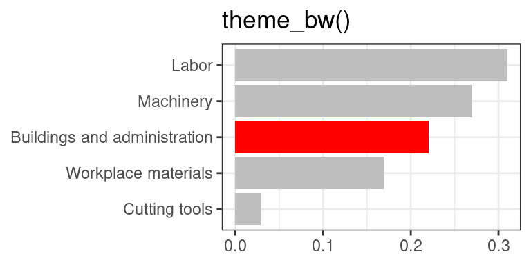
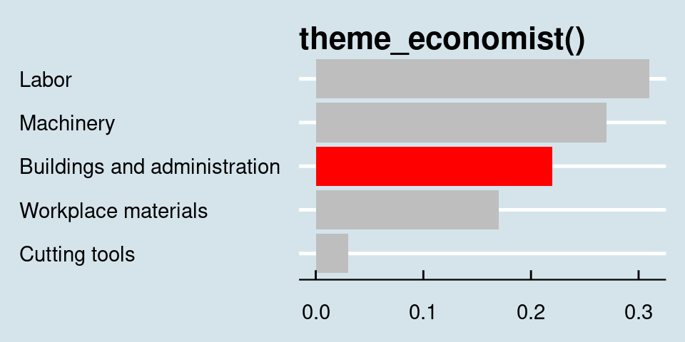
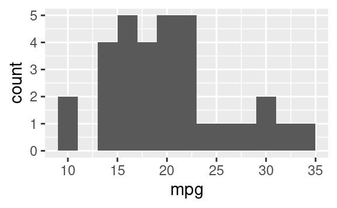
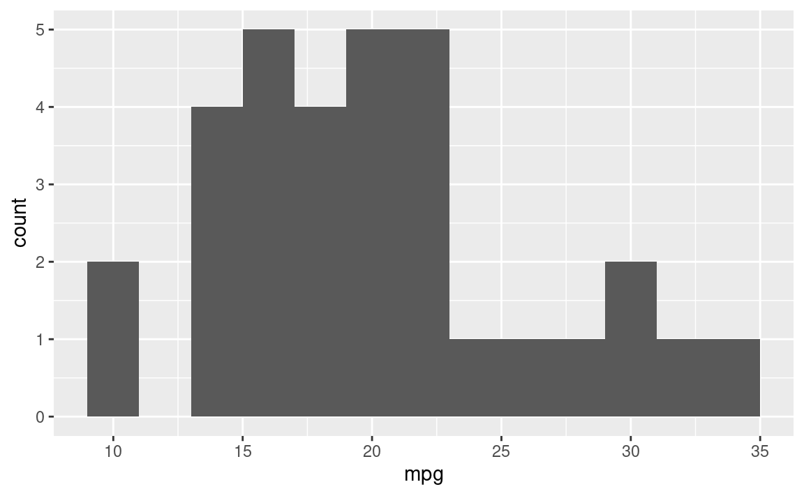
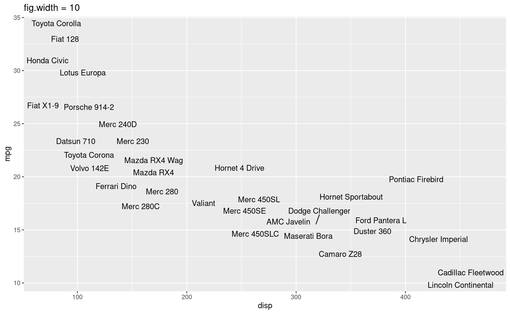
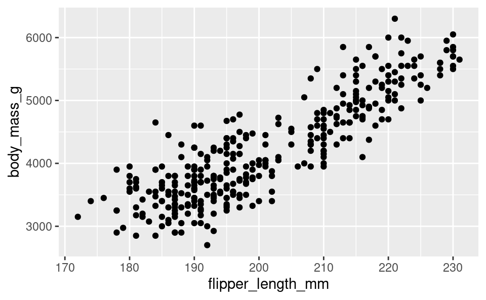

Project Report Tips
STA 101
By the end of today you will practice a few quarto/markdown tricks to polish your report and simplify your presentation. Specifically we will discuss:
- code chunk settings
- citations
kable()tables
Getting started
Code chunk settings
Some options available for customizing output (see quarto documenation for more detail).
| Option | Description |
|---|---|
eval |
Evaluate the code chunk (if false, just echos the code into the output) |
echo |
Include the source code in output |
warning |
Include warnings in the output |
message |
Whether to preserve messages emitted by message() (similar to the option warning) |
include |
Catch all for preventing any output (code or results) from being included (e.g. include: false suppresses all output from the code block) |
These options can be applied globally (the whole document) or locally (a specific code chunk). Global settings are controlled in the YAML (see the top of the document) while local code chunk options can be applied with #| (see example below).
Exercise 1
In the code chunk below:
- set
warningto false - set
echoto false
and re-render.
In addition to code chunks, figures have settings as well.
We can set captions and an alt attributes using #| fig-cap: and #| fig-alt: respectively. alt captions specify “alternate text” for an image. Alternative text appears if an image cannot be displayed and is also read by screen-readers.
Additional figure options include
| Option | Description |
|---|---|
fig-width |
figure width in inches |
fig-height |
figure height in inches |
fig.align |
e.g. fig.align: center centers figure alignment |
fig.asp |
changes figure height based on aspect ratio with width |
out.width |
sets figure width relative to text (1000 = 100% text width), e.g. out.width: 1000 |
In all cases above, we can again set options locally or globally. Note: local options override global options.
Example of how to change size of the figure and adjust text size.
Project specific notes
For the project, you will set the option echo: FALSE and warning: FALSE to hide all code and warnings in your final report.
Suggestion: make your figures consistently themed, e.g. use similar figure size/aspect ratio and color scheme throughout your report. Change the default gray background, see themes.
Citations
Your report will include citations, e.g. the data source, previous research, and other sources as needed. At a minimum, you should have a citation for the data source.
All of your bibliography entries will be stored in a .bib file. The entries of the bibliography are stored using BibTex, i.e., a format to store citations in LaTeX. Let’s take a look at references.bib.
In addition to the .bib file:
- Include
bibliography: references.bibin the YAML. - At the end of the report, include
## References. This will list all of the references at the end of the document.
Learn more here.
Convert website to citation: here.
Or find on google scholar!
Citation examples
In Wickham, Chang, and Wickham (2016), the authors focus present the grammar of graphics package
ggplot2for R.Within the grammar of graphics,
ggplot()is the first layer of any plot (Wickham, Chang, and Wickham 2016).These notes came from Husar (2024).
Links
Add URLs to your document using the following syntax:
Use color to draw attention
# A tibble: 5 × 2
category value
<chr> <dbl>
1 Cutting tools 0.03
2 Buildings and administration 0.22
3 Labor 0.31
4 Machinery 0.27
5 Workplace materials 0.17
Important
Do not display a table like this! Use knitr::kable()!
d |> knitr::kable(digits = 2)| category | value |
|---|---|
| Cutting tools | 0.03 |
| Buildings and administration | 0.22 |
| Labor | 0.31 |
| Machinery | 0.27 |
| Workplace materials | 0.17 |
Note the orders in these plot!
Play with themes for a non-standard look

Go beyond ggplot2 themes – ggthemes

How to save the image for the presentation:
Plot sizing and layout
Sample plots
Small fig-width
For a zoomed-in look
```{r}
#| fig-width: 3
#| fig-asp: 0.618
p_hist
ggsave("hist.png")
```
Large fig-width
For a zoomed-out look
```{r}
#| fig-width: 6
#| fig-asp: 0.618
p_hist
```
fig-width affects text size

Multiple plots on a slide
If no, then don’t! Move the second plot to to the next slide!
If yes, use columns and sequential reveal.
Cross referencing figures
As seen in Figure 1, there is a positive and relatively strong relationship between body mass and flipper length of penguins.

Cross referencing tables
The regression output is shown in Table 1.
| term | estimate | std.error | statistic | p.value |
|---|---|---|---|---|
| (Intercept) | -5780.831 | 305.815 | -18.903 | 0 |
| flipper_length_mm | 49.686 | 1.518 | 32.722 | 0 |
Similarly, looking at the dataset we created earlier:
| category | value |
|---|---|
| Cutting tools | 0.03 |
| Buildings and administration | 0.22 |
| Labor | 0.31 |
| Machinery | 0.27 |
| Workplace materials | 0.17 |
Writing your project report with Quarto
Figure sizing:
fig-width,fig-height, etc. in code chunks.Figure layout:
layout-ncolfor placing multiple figures in a chunk.Further control over figure layout with the patchwork package.
Chunk options around what makes it in your final report:
message,echo, etc.Cross referencing figures and tables.
Adding footnotes and citations.
References
Husar, Kat. 2024. “STA 101 - Summer 24 - STA 101: Data Analysis and Statistical Inference — Sta101-Su2024.github.io.” https://sta101-su2024.github.io/.
Wickham, Hadley, Winston Chang, and Maintainer Hadley Wickham. 2016. “Package ‘Ggplot2’.” Create Elegant Data Visualisations Using the Grammar of Graphics. Version 2 (1): 1–189.